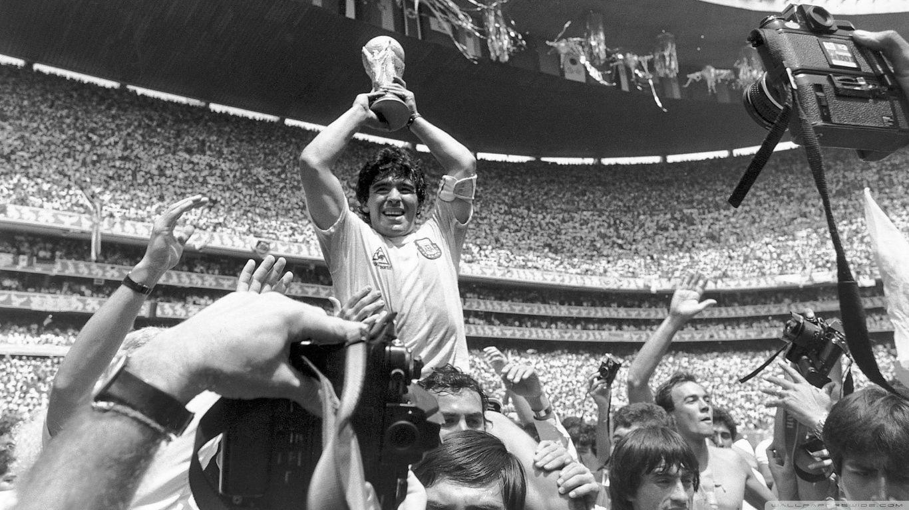

Diego Armando Maradona
Golden boy of football village

Maradona cầm chiếc cúp vô địch World Cup 1986
Here's a time line of Maradona's life:
- 1960:ús, Buenos Aires, Argentina
- 1976:Maradona có trận ra mắt chuyên nghiệp cho Argentinos Juniors, 10 ngày trước sinh nhật thứ 16 của anh,[25] khi đối đầu với đội Talleres de Córdoba. Anh vào sân với chiếc áo số 16 và trở thành cầu thủ trẻ nhất trong lịch sử của Primera División Argentina.
- 1981:Maradona ký hợp đồng với Boca Juniors
- 1982:Maradona được chuyển đến Barcelona ở Tây Ban Nha với mức phí kỷ lục thế giới lúc bấy giờ là 5 triệu bảng (7,6 triệu USD)
- 1984:Maradona đến Napoli và được giới thiệu với giới truyền thông thế giới với tư cách là một cầu thủ Napoli
- 1992:Maradona rời Napoli trong tủi hổ
- 1977:Ông có trận ra mắt quốc tế đầy đủ ở tuổi 16, trong trận đấu với Hungary
- 1978:Maradona bị huấn luyện viên César Luis Menotti loại khỏi đội tuyển Argentina
- 1979: Ở tuổi 18, Maradona đã chơi ở Giải vô địch trẻ thế giới năm 1979 tại Nhật Bản và nổi lên như một ngôi sao của giải đấu
- 1986:Maradona đã dẫn dắt đội tuyển quốc gia Argentina vô địch World Cup 1986 tại Mexico
- 1990:Maradona lại là đội trưởng của Argentina ở World Cup 1990 tại Ý và đi tới một trận chung kết World Cup nữa
- 1994:Maradona chỉ chơi hai trận (đều ở sân Foxboro gần Boston), ghi một bàn vào lưới Hy Lạp, trước khi bị đuổi về nước sau khi không qua được cuộc kiểm tra chất kích thích ephedrine
- 2000:Maradona giành được giải thưởng Cầu thủ xuất sắc nhất thế kỷ của FIFA
- 2001: Liên đoàn bóng đá Argentina (AFA) hỏi FIFA cho phép số áo 10 cho Maradona được nghỉ không dùng vĩnh viễn. FIFA đã không chấp nhận yêu cầu này, mặc dù các quan chức Argentina vẫn khẳng định rằng FIFA ám chỉ rằng điều đó sẽ xảy ra
- 2020:Mất ở tuổi 60